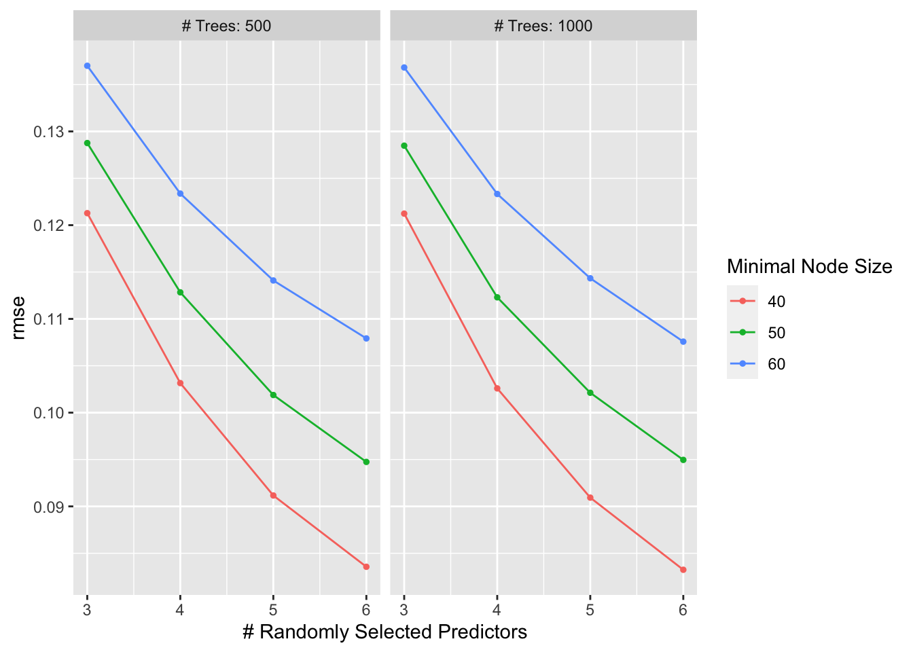
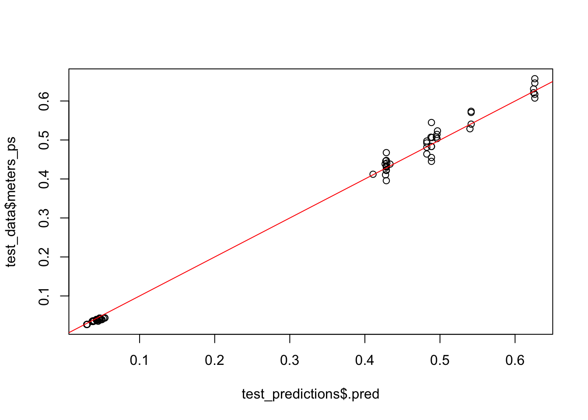

Tidy Tuesday
This is a Tidy Tuesday exercise that I did in a Modern Applied Data Analysis course at UGA with Dr. Andreas Handel. With this exercise, I use data on competitive marble racing, a recent youTube phenomena. You can find more information here at the github page
Data Import
The following chunk of code loads packages and imports the data. I also use skim() to get some quick decriptive statistics on the data.
##
## Attaching package: 'janitor'## The following objects are masked from 'package:stats':
##
## chisq.test, fisher.testlibrary(broom)
library(here) #for data loading/saving
library(tidyverse)
library(recipes)
library(tidymodels)
library(workflowr)
library(parsnip)
library(rsample)
library(rpart)
library(glmnet)
library(ranger)
library(modeldata)
library(rpart.plot)
library(dials)
library(workflows)
library(vip)
library(glmnet)
library(yardstick)
library(doParallel) # for parallel computing
# Get the Data
marbles <- read_csv('https://raw.githubusercontent.com/rfordatascience/tidytuesday/master/data/2020/2020-06-02/marbles.csv')## Rows: 256 Columns: 14## ── Column specification ────────────────────────────────────────────────────────
## Delimiter: ","
## chr (9): date, race, site, source, marble_name, team_name, pole, host, notes
## dbl (5): time_s, points, track_length_m, number_laps, avg_time_lap##
## ℹ Use `spec()` to retrieve the full column specification for this data.
## ℹ Specify the column types or set `show_col_types = FALSE` to quiet this message.## Rows: 256
## Columns: 14
## $ date <chr> "15-Feb-20", "15-Feb-20", "15-Feb-20", "15-Feb-20", "15…
## $ race <chr> "S1Q1", "S1Q1", "S1Q1", "S1Q1", "S1Q1", "S1Q1", "S1Q1",…
## $ site <chr> "Savage Speedway", "Savage Speedway", "Savage Speedway"…
## $ source <chr> "https://youtu.be/JtsQ_UydjEI?t=356", "https://youtu.be…
## $ marble_name <chr> "Clementin", "Starry", "Momo", "Yellow", "Snowy", "Razz…
## $ team_name <chr> "O'rangers", "Team Galactic", "Team Momo", "Mellow Yell…
## $ time_s <dbl> 28.11, 28.37, 28.40, 28.70, 28.71, 28.72, 28.96, 29.11,…
## $ pole <chr> "P1", "P2", "P3", "P4", "P5", "P6", "P7", "P8", "P9", "…
## $ points <dbl> NA, NA, NA, NA, NA, NA, NA, NA, NA, NA, NA, NA, NA, NA,…
## $ track_length_m <dbl> 12.81, 12.81, 12.81, 12.81, 12.81, 12.81, 12.81, 12.81,…
## $ number_laps <dbl> 1, 1, 1, 1, 1, 1, 1, 1, 1, 1, 1, 1, 1, 1, 1, 1, 10, 10,…
## $ avg_time_lap <dbl> 28.11, 28.37, 28.40, 28.70, 28.71, 28.72, 28.96, 29.11,…
## $ host <chr> "No", "No", "No", "No", "No", "No", "No", "No", "No", "…
## $ notes <chr> NA, NA, NA, NA, NA, NA, NA, NA, NA, NA, NA, NA, NA, NA,…## # A tibble: 6 × 14
## date race site source marble_name team_name time_s pole points
## <chr> <chr> <chr> <chr> <chr> <chr> <dbl> <chr> <dbl>
## 1 15-Feb-20 S1Q1 Savage… https://yo… Clementin O'rangers 28.1 P1 NA
## 2 15-Feb-20 S1Q1 Savage… https://yo… Starry Team Gala… 28.4 P2 NA
## 3 15-Feb-20 S1Q1 Savage… https://yo… Momo Team Momo 28.4 P3 NA
## 4 15-Feb-20 S1Q1 Savage… https://yo… Yellow Mellow Ye… 28.7 P4 NA
## 5 15-Feb-20 S1Q1 Savage… https://yo… Snowy Snowballs 28.7 P5 NA
## 6 15-Feb-20 S1Q1 Savage… https://yo… Razzy Raspberry… 28.7 P6 NA
## # … with 5 more variables: track_length_m <dbl>, number_laps <dbl>,
## # avg_time_lap <dbl>, host <chr>, notes <chr>## # A tibble: 6 × 14
## date race site source marble_name team_name time_s pole points
## <chr> <chr> <chr> <chr> <chr> <chr> <dbl> <chr> <dbl>
## 1 5-Apr-20 S1R8 Midnight Bay https:/… Wospy Midnight… 483. <NA> 0
## 2 5-Apr-20 S1R8 Midnight Bay https:/… Clementin O'rangers 483. <NA> 0
## 3 5-Apr-20 S1R8 Midnight Bay https:/… Yellup Mellow Y… 483. <NA> 0
## 4 5-Apr-20 S1R8 Midnight Bay https:/… Hive Hornets 484. <NA> 0
## 5 5-Apr-20 S1R8 Midnight Bay https:/… Starry Team Gal… 485. <NA> 0
## 6 5-Apr-20 S1R8 Midnight Bay https:/… Sublime Limers 492. <NA> 0
## # … with 5 more variables: track_length_m <dbl>, number_laps <dbl>,
## # avg_time_lap <dbl>, host <chr>, notes <chr>| Name | marbles |
| Number of rows | 256 |
| Number of columns | 14 |
| _______________________ | |
| Column type frequency: | |
| character | 9 |
| numeric | 5 |
| ________________________ | |
| Group variables | None |
Variable type: character
| skim_variable | n_missing | complete_rate | min | max | empty | n_unique | whitespace |
|---|---|---|---|---|---|---|---|
| date | 0 | 1.00 | 8 | 9 | 0 | 16 | 0 |
| race | 0 | 1.00 | 4 | 4 | 0 | 16 | 0 |
| site | 0 | 1.00 | 7 | 15 | 0 | 8 | 0 |
| source | 0 | 1.00 | 34 | 34 | 0 | 16 | 0 |
| marble_name | 0 | 1.00 | 4 | 9 | 0 | 32 | 0 |
| team_name | 0 | 1.00 | 6 | 16 | 0 | 16 | 0 |
| pole | 128 | 0.50 | 2 | 3 | 0 | 16 | 0 |
| host | 0 | 1.00 | 2 | 3 | 0 | 2 | 0 |
| notes | 249 | 0.03 | 37 | 100 | 0 | 7 | 0 |
Variable type: numeric
| skim_variable | n_missing | complete_rate | mean | sd | p0 | p25 | p50 | p75 | p100 | hist |
|---|---|---|---|---|---|---|---|---|---|---|
| time_s | 3 | 0.99 | 190.84 | 169.13 | 17.76 | 28.40 | 36.28 | 338.16 | 492.01 | ▇▁▁▇▁ |
| points | 128 | 0.50 | 6.45 | 7.74 | 0.00 | 0.00 | 3.00 | 11.25 | 26.00 | ▇▂▂▁▁ |
| track_length_m | 0 | 1.00 | 13.22 | 0.95 | 11.90 | 12.62 | 13.02 | 14.13 | 14.55 | ▅▅▂▁▇ |
| number_laps | 0 | 1.00 | 6.25 | 5.53 | 1.00 | 1.00 | 5.00 | 10.25 | 16.00 | ▇▁▃▂▂ |
| avg_time_lap | 3 | 0.99 | 29.70 | 5.55 | 17.76 | 25.94 | 30.05 | 33.65 | 41.62 | ▃▆▇▇▂ |
Exploring Data: First I want to check on some simple characteristics of the data like how many races were collected, how many teams, how many marbles, and how many marbles per team.
##
## No Yes
## 240 16##
## Balls of Chaos Green Ducks Hazers Hornets Limers Mellow Yellow
## No 16 14 16 14 16 16
## Yes 0 2 0 2 0 0
##
## Midnight Wisps O'rangers Raspberry Racers Rojo Rollers Savage Speeders
## No 15 14 13 16 14
## Yes 1 2 3 0 2
##
## Snowballs Team Galactic Team Momo Team Primary Thunderbolts
## No 16 16 14 16 14
## Yes 0 0 2 0 2##
## Greenstone Hivedrive Midnight Bay Momotorway O'raceway
## 32 32 32 32 32
## Razzway Savage Speedway Short Circuit
## 32 32 32# How many races? Looks here like we have an equal number of observations per race with 16 total races
table(marbles$race)##
## S1Q1 S1Q2 S1Q3 S1Q4 S1Q5 S1Q6 S1Q7 S1Q8 S1R1 S1R2 S1R3 S1R4 S1R5 S1R6 S1R7 S1R8
## 16 16 16 16 16 16 16 16 16 16 16 16 16 16 16 16##
## Balls of Chaos Green Ducks Hazers Hornets
## 16 16 16 16
## Limers Mellow Yellow Midnight Wisps O'rangers
## 16 16 16 16
## Raspberry Racers Rojo Rollers Savage Speeders Snowballs
## 16 16 16 16
## Team Galactic Team Momo Team Primary Thunderbolts
## 16 16 16 16##
## Balls of Chaos Green Ducks Hazers Hornets Limers Mellow Yellow
## S1Q1 1 1 1 1 1 1
## S1Q2 1 1 1 1 1 1
## S1Q3 1 1 1 1 1 1
## S1Q4 1 1 1 1 1 1
## S1Q5 1 1 1 1 1 1
## S1Q6 1 1 1 1 1 1
## S1Q7 1 1 1 1 1 1
## S1Q8 1 1 1 1 1 1
## S1R1 1 1 1 1 1 1
## S1R2 1 1 1 1 1 1
## S1R3 1 1 1 1 1 1
## S1R4 1 1 1 1 1 1
## S1R5 1 1 1 1 1 1
## S1R6 1 1 1 1 1 1
## S1R7 1 1 1 1 1 1
## S1R8 1 1 1 1 1 1
##
## Midnight Wisps O'rangers Raspberry Racers Rojo Rollers Savage Speeders
## S1Q1 1 1 1 1 1
## S1Q2 1 1 1 1 1
## S1Q3 1 1 1 1 1
## S1Q4 1 1 1 1 1
## S1Q5 1 1 1 1 1
## S1Q6 1 1 1 1 1
## S1Q7 1 1 1 1 1
## S1Q8 1 1 1 1 1
## S1R1 1 1 1 1 1
## S1R2 1 1 1 1 1
## S1R3 1 1 1 1 1
## S1R4 1 1 1 1 1
## S1R5 1 1 1 1 1
## S1R6 1 1 1 1 1
## S1R7 1 1 1 1 1
## S1R8 1 1 1 1 1
##
## Snowballs Team Galactic Team Momo Team Primary Thunderbolts
## S1Q1 1 1 1 1 1
## S1Q2 1 1 1 1 1
## S1Q3 1 1 1 1 1
## S1Q4 1 1 1 1 1
## S1Q5 1 1 1 1 1
## S1Q6 1 1 1 1 1
## S1Q7 1 1 1 1 1
## S1Q8 1 1 1 1 1
## S1R1 1 1 1 1 1
## S1R2 1 1 1 1 1
## S1R3 1 1 1 1 1
## S1R4 1 1 1 1 1
## S1R5 1 1 1 1 1
## S1R6 1 1 1 1 1
## S1R7 1 1 1 1 1
## S1R8 1 1 1 1 1# number of individual marbles. 31. Tabling this, we see that not every marble
# raced in every event. It looks like they had to qualify to race
table(marbles$marble_name)##
## Anarchy Billy Bolt Clementin Clutter Hazy Hive Limelime
## 8 8 8 8 8 8 8 8
## Mallard Mary Mimo Momo Orangin Prim Pulsar Rapidly
## 8 8 8 8 8 8 8 8
## Razzy Rezzy Rojo Dos Rojo Uno Shock Smoggy Snowflake Snowy
## 8 8 8 8 8 8 8 8
## Speedy Starry Sublime Vespa Wispy Wospy Yellow Yellup
## 8 8 8 8 8 8 8 8##
## S1Q1 S1Q2 S1Q3 S1Q4 S1Q5 S1Q6 S1Q7 S1Q8 S1R1 S1R2 S1R3 S1R4 S1R5
## Anarchy 0 1 0 1 0 1 1 0 0 1 0 1 0
## Billy 0 1 0 1 0 1 1 0 0 1 0 1 0
## Bolt 0 1 0 1 1 0 0 1 0 1 0 1 1
## Clementin 1 0 1 0 0 1 0 1 1 0 1 0 0
## Clutter 1 0 1 0 1 0 0 1 1 0 1 0 1
## Hazy 1 0 1 0 1 0 0 1 1 0 1 0 1
## Hive 0 1 0 1 1 0 0 1 0 1 0 1 1
## Limelime 0 1 0 1 1 0 1 0 0 1 0 1 1
## Mallard 1 0 1 0 1 0 0 1 1 0 1 0 1
## Mary 0 1 0 1 1 0 1 0 0 1 0 1 1
## Mimo 0 1 0 1 0 1 1 0 0 1 0 1 0
## Momo 1 0 1 0 1 0 0 1 1 0 1 0 1
## Orangin 0 1 0 1 1 0 1 0 0 1 0 1 1
## Prim 1 0 1 0 0 1 0 1 1 0 1 0 0
## Pulsar 0 1 0 1 0 1 1 0 0 1 0 1 0
## Rapidly 0 1 0 1 1 0 1 0 0 1 0 1 1
## Razzy 1 0 1 0 0 1 1 0 1 0 1 0 0
## Rezzy 0 1 0 1 1 0 0 1 0 1 0 1 1
## Rojo Dos 0 1 0 1 0 1 1 0 0 1 0 1 0
## Rojo Uno 1 0 1 0 1 0 0 1 1 0 1 0 1
## Shock 1 0 1 0 0 1 1 0 1 0 1 0 0
## Smoggy 0 1 0 1 0 1 1 0 0 1 0 1 0
## Snowflake 0 1 0 1 1 0 1 0 0 1 0 1 1
## Snowy 1 0 1 0 0 1 0 1 1 0 1 0 0
## Speedy 1 0 1 0 0 1 0 1 1 0 1 0 0
## Starry 1 0 1 0 1 0 0 1 1 0 1 0 1
## Sublime 1 0 1 0 0 1 0 1 1 0 1 0 0
## Vespa 1 0 1 0 0 1 1 0 1 0 1 0 0
## Wispy 1 0 1 0 0 1 1 0 1 0 1 0 0
## Wospy 0 1 0 1 1 0 0 1 0 1 0 1 1
## Yellow 1 0 1 0 0 1 1 0 1 0 1 0 0
## Yellup 0 1 0 1 1 0 0 1 0 1 0 1 1
##
## S1R6 S1R7 S1R8
## Anarchy 1 1 0
## Billy 1 1 0
## Bolt 0 0 1
## Clementin 1 0 1
## Clutter 0 0 1
## Hazy 0 0 1
## Hive 0 0 1
## Limelime 0 1 0
## Mallard 0 0 1
## Mary 0 1 0
## Mimo 1 1 0
## Momo 0 0 1
## Orangin 0 1 0
## Prim 1 0 1
## Pulsar 1 1 0
## Rapidly 0 1 0
## Razzy 1 1 0
## Rezzy 0 0 1
## Rojo Dos 1 1 0
## Rojo Uno 0 0 1
## Shock 1 1 0
## Smoggy 1 1 0
## Snowflake 0 1 0
## Snowy 1 0 1
## Speedy 1 0 1
## Starry 0 0 1
## Sublime 1 0 1
## Vespa 1 1 0
## Wispy 1 1 0
## Wospy 0 0 1
## Yellow 1 1 0
## Yellup 0 0 1# exploring missing data
#there are a lot missing with the points variable seen below
sum(is.na(marbles$points))## [1] 128Descriptive Questions: Which marble performs the best (has the lowest median race time)? Which team performs the best? Since the races are all different lengths, I standardize the race times similar to how they did in the paper linked on the github. I first calculate the average race time for each specific race and then divide each marble’s time by the average to get the standard.Then I calculate the median race time by marble and by team
#marbles$qual <- grepl('Q', marbles$race, fixed = TRUE)
#first standardizing race...
#calculating average time by race and saving as a new df
av_race_times <- marbles %>%
group_by(race) %>%
dplyr::summarize(mean_race_time = mean(time_s, na.rm=TRUE))
#then repeating measures for merging
av_race_times <- av_race_times[rep(seq_len(nrow(av_race_times)), each = 16), ]
#merging with original set on id
#but first a sort
marbles<- marbles[
with(marbles, order(race)),
]
#
marbles_new <- cbind(marbles, av_race_times$mean_race_time)
glimpse(marbles_new)## Rows: 256
## Columns: 15
## $ date <chr> "15-Feb-20", "15-Feb-20", "15-Feb-20", …
## $ race <chr> "S1Q1", "S1Q1", "S1Q1", "S1Q1", "S1Q1",…
## $ site <chr> "Savage Speedway", "Savage Speedway", "…
## $ source <chr> "https://youtu.be/JtsQ_UydjEI?t=356", "…
## $ marble_name <chr> "Clementin", "Starry", "Momo", "Yellow"…
## $ team_name <chr> "O'rangers", "Team Galactic", "Team Mom…
## $ time_s <dbl> 28.11, 28.37, 28.40, 28.70, 28.71, 28.7…
## $ pole <chr> "P1", "P2", "P3", "P4", "P5", "P6", "P7…
## $ points <dbl> NA, NA, NA, NA, NA, NA, NA, NA, NA, NA,…
## $ track_length_m <dbl> 12.81, 12.81, 12.81, 12.81, 12.81, 12.8…
## $ number_laps <dbl> 1, 1, 1, 1, 1, 1, 1, 1, 1, 1, 1, 1, 1, …
## $ avg_time_lap <dbl> 28.11, 28.37, 28.40, 28.70, 28.71, 28.7…
## $ host <chr> "No", "No", "No", "No", "No", "No", "No…
## $ notes <chr> NA, NA, NA, NA, NA, NA, NA, NA, NA, NA,…
## $ `av_race_times$mean_race_time` <dbl> 29.44000, 29.44000, 29.44000, 29.44000,…#let's rename that one...
marbles_new <- rename(marbles_new, average_by_race = `av_race_times$mean_race_time`)
#marbles_new <- marbles_new[which(marbles_new$qual == FALSE), ]
#calculating standard like they did in paper
marbles_new <- marbles_new %>%
dplyr::mutate(standard_time= time_s/average_by_race)
glimpse(marbles_new)## Rows: 256
## Columns: 16
## $ date <chr> "15-Feb-20", "15-Feb-20", "15-Feb-20", "15-Feb-20", "1…
## $ race <chr> "S1Q1", "S1Q1", "S1Q1", "S1Q1", "S1Q1", "S1Q1", "S1Q1"…
## $ site <chr> "Savage Speedway", "Savage Speedway", "Savage Speedway…
## $ source <chr> "https://youtu.be/JtsQ_UydjEI?t=356", "https://youtu.b…
## $ marble_name <chr> "Clementin", "Starry", "Momo", "Yellow", "Snowy", "Raz…
## $ team_name <chr> "O'rangers", "Team Galactic", "Team Momo", "Mellow Yel…
## $ time_s <dbl> 28.11, 28.37, 28.40, 28.70, 28.71, 28.72, 28.96, 29.11…
## $ pole <chr> "P1", "P2", "P3", "P4", "P5", "P6", "P7", "P8", "P9", …
## $ points <dbl> NA, NA, NA, NA, NA, NA, NA, NA, NA, NA, NA, NA, NA, NA…
## $ track_length_m <dbl> 12.81, 12.81, 12.81, 12.81, 12.81, 12.81, 12.81, 12.81…
## $ number_laps <dbl> 1, 1, 1, 1, 1, 1, 1, 1, 1, 1, 1, 1, 1, 1, 1, 1, 1, 1, …
## $ avg_time_lap <dbl> 28.11, 28.37, 28.40, 28.70, 28.71, 28.72, 28.96, 29.11…
## $ host <chr> "No", "No", "No", "No", "No", "No", "No", "No", "No", …
## $ notes <chr> NA, NA, NA, NA, NA, NA, NA, NA, NA, NA, NA, NA, NA, NA…
## $ average_by_race <dbl> 29.44000, 29.44000, 29.44000, 29.44000, 29.44000, 29.4…
## $ standard_time <dbl> 0.9548234, 0.9636549, 0.9646739, 0.9748641, 0.9752038,…#creating a new median variable by marble for plotting in order
med_st <- marbles_new %>%
group_by(marble_name) %>%
dplyr::summarize(med_st_time = median(standard_time, na.rm = TRUE ))
#then repeating measures for merging
med_st <- med_st[rep(seq_len(nrow(med_st)), each = 8), ]
marbles_new <- marbles_new[
with(marbles_new, order(marble_name)),
]
glimpse(marbles_new)## Rows: 256
## Columns: 16
## $ date <chr> "22-Feb-20", "7-Mar-20", "21-Mar-20", "28-Mar-20", "23…
## $ race <chr> "S1Q2", "S1Q4", "S1Q6", "S1Q7", "S1R2", "S1R4", "S1R6"…
## $ site <chr> "O'raceway", "Hivedrive", "Short Circuit", "Razzway", …
## $ source <chr> "https://youtu.be/_tE8yYHFLpw?t=332", "https://youtu.b…
## $ marble_name <chr> "Anarchy", "Anarchy", "Anarchy", "Anarchy", "Anarchy",…
## $ team_name <chr> "Balls of Chaos", "Balls of Chaos", "Balls of Chaos", …
## $ time_s <dbl> 32.40, 29.01, 19.31, 30.89, 327.24, 345.76, 338.16, 33…
## $ pole <chr> "P9", "P14", "P10", "P15", NA, NA, NA, NA, "P5", "P11"…
## $ points <dbl> NA, NA, NA, NA, 1, 0, 0, 10, NA, NA, NA, NA, 26, 0, 2,…
## $ track_length_m <dbl> 14.05, 13.20, 11.90, 14.38, 14.05, 13.20, 11.90, 14.38…
## $ number_laps <dbl> 1, 1, 1, 1, 9, 11, 14, 10, 1, 1, 1, 1, 9, 11, 14, 10, …
## $ avg_time_lap <dbl> 32.40, 29.01, 19.31, 30.89, 36.36, 31.43, 24.15, 33.38…
## $ host <chr> "No", "No", "No", "No", "No", "No", "No", "No", "No", …
## $ notes <chr> NA, NA, NA, NA, NA, NA, NA, "**Note: Upon the restart,…
## $ average_by_race <dbl> 32.38813, 26.90750, 18.88750, 29.60438, 326.11067, 339…
## $ standard_time <dbl> 1.0003666, 1.0781381, 1.0223693, 1.0434269, 1.0034630,…## Rows: 256
## Columns: 17
## $ date <chr> "22-Feb-20", "7-Mar-20", "21-Mar-20", "28-Mar-20"…
## $ race <chr> "S1Q2", "S1Q4", "S1Q6", "S1Q7", "S1R2", "S1R4", "…
## $ site <chr> "O'raceway", "Hivedrive", "Short Circuit", "Razzw…
## $ source <chr> "https://youtu.be/_tE8yYHFLpw?t=332", "https://yo…
## $ marble_name <chr> "Anarchy", "Anarchy", "Anarchy", "Anarchy", "Anar…
## $ team_name <chr> "Balls of Chaos", "Balls of Chaos", "Balls of Cha…
## $ time_s <dbl> 32.40, 29.01, 19.31, 30.89, 327.24, 345.76, 338.1…
## $ pole <chr> "P9", "P14", "P10", "P15", NA, NA, NA, NA, "P5", …
## $ points <dbl> NA, NA, NA, NA, 1, 0, 0, 10, NA, NA, NA, NA, 26, …
## $ track_length_m <dbl> 14.05, 13.20, 11.90, 14.38, 14.05, 13.20, 11.90, …
## $ number_laps <dbl> 1, 1, 1, 1, 9, 11, 14, 10, 1, 1, 1, 1, 9, 11, 14,…
## $ avg_time_lap <dbl> 32.40, 29.01, 19.31, 30.89, 36.36, 31.43, 24.15, …
## $ host <chr> "No", "No", "No", "No", "No", "No", "No", "No", "…
## $ notes <chr> NA, NA, NA, NA, NA, NA, NA, "**Note: Upon the res…
## $ average_by_race <dbl> 32.38813, 26.90750, 18.88750, 29.60438, 326.11067…
## $ standard_time <dbl> 1.0003666, 1.0781381, 1.0223693, 1.0434269, 1.003…
## $ `med_st$med_st_time` <dbl> 1.0176650, 1.0176650, 1.0176650, 1.0176650, 1.017…#creating another median variable by team for plotting in order
med_st_team <- marbles_new %>%
group_by(team_name) %>%
dplyr::summarize(med_st_team = median(standard_time, na.rm = TRUE ))
#then repeating measures for merging
med_st_team <- med_st_team[rep(seq_len(nrow(med_st_team)), each = 16), ]
marbles_new1 <- marbles_new1[
with(marbles_new1, order(team_name)),
]
marbles_new1 <- cbind(marbles_new1, med_st_team$med_st_team)
glimpse(marbles_new1)## Rows: 256
## Columns: 18
## $ date <chr> "22-Feb-20", "7-Mar-20", "21-Mar-20", "28-Ma…
## $ race <chr> "S1Q2", "S1Q4", "S1Q6", "S1Q7", "S1R2", "S1R…
## $ site <chr> "O'raceway", "Hivedrive", "Short Circuit", "…
## $ source <chr> "https://youtu.be/_tE8yYHFLpw?t=332", "https…
## $ marble_name <chr> "Anarchy", "Anarchy", "Anarchy", "Anarchy", …
## $ team_name <chr> "Balls of Chaos", "Balls of Chaos", "Balls o…
## $ time_s <dbl> 32.40, 29.01, 19.31, 30.89, 327.24, 345.76, …
## $ pole <chr> "P9", "P14", "P10", "P15", NA, NA, NA, NA, "…
## $ points <dbl> NA, NA, NA, NA, 1, 0, 0, 10, NA, NA, NA, NA,…
## $ track_length_m <dbl> 14.05, 13.20, 11.90, 14.38, 14.05, 13.20, 11…
## $ number_laps <dbl> 1, 1, 1, 1, 9, 11, 14, 10, 1, 1, 1, 1, 10, 1…
## $ avg_time_lap <dbl> 32.40, 29.01, 19.31, 30.89, 36.36, 31.43, 24…
## $ host <chr> "No", "No", "No", "No", "No", "No", "No", "N…
## $ notes <chr> NA, NA, NA, NA, NA, NA, NA, "**Note: Upon th…
## $ average_by_race <dbl> 32.38813, 26.90750, 18.88750, 29.60438, 326.…
## $ standard_time <dbl> 1.0003666, 1.0781381, 1.0223693, 1.0434269, …
## $ `med_st$med_st_time` <dbl> 1.0176650, 1.0176650, 1.0176650, 1.0176650, …
## $ `med_st_team$med_st_team` <dbl> 1.006802, 1.006802, 1.006802, 1.006802, 1.00…Descriptive Statistics: The boxplots below show the standardized race times by marble name and team name. This includes both qualifier and official races. Here we see that Smoggy, Prim, and Oringin tend to have better race times than the rest and Anarchy, Sublime, and Mary have the worst. Regarding teams, Hazers, Savage Speeders, and Mellow Yellow are at the top with the lowest median race times.
# boxplots of standardized times by marble
ggplot(marbles_new1, aes(x=reorder(marble_name, `med_st$med_st_time` ), y=standard_time)) + geom_boxplot() + labs(title= "Boxplots of Standardized Race Times by Marble Name") + xlab("Marble Name") + ylab("Standardized Race Time") +
theme(axis.text.x = element_text(angle = 90, vjust = 0.5, hjust=1))## Warning: Removed 3 rows containing non-finite values (stat_boxplot).#boxplots of standardized times by team
ggplot(marbles_new1, aes(x=reorder(team_name, `med_st_team$med_st_team`), y=standard_time)) + geom_boxplot() +
labs(title= "Boxplots of Standardized Race Times by Team Name") + xlab("Team Name") + ylab("Standardized Race Time") +
theme(axis.text.x = element_text(angle = 90, vjust = 0.5, hjust=1))## Warning: Removed 3 rows containing non-finite values (stat_boxplot).#here i make a new dataset sorted by time and race. i will then assign ranks to plot who ranks highest most often
marble_rank <- marbles[order(marbles$race, marbles$time_s),]
marble_rank$ranks <- rep(1:16, 16)
glimpse(marble_rank)## Rows: 256
## Columns: 15
## $ date <chr> "15-Feb-20", "15-Feb-20", "15-Feb-20", "15-Feb-20", "15…
## $ race <chr> "S1Q1", "S1Q1", "S1Q1", "S1Q1", "S1Q1", "S1Q1", "S1Q1",…
## $ site <chr> "Savage Speedway", "Savage Speedway", "Savage Speedway"…
## $ source <chr> "https://youtu.be/JtsQ_UydjEI?t=356", "https://youtu.be…
## $ marble_name <chr> "Clementin", "Starry", "Momo", "Yellow", "Snowy", "Razz…
## $ team_name <chr> "O'rangers", "Team Galactic", "Team Momo", "Mellow Yell…
## $ time_s <dbl> 28.11, 28.37, 28.40, 28.70, 28.71, 28.72, 28.96, 29.11,…
## $ pole <chr> "P1", "P2", "P3", "P4", "P5", "P6", "P7", "P8", "P9", "…
## $ points <dbl> NA, NA, NA, NA, NA, NA, NA, NA, NA, NA, NA, NA, NA, NA,…
## $ track_length_m <dbl> 12.81, 12.81, 12.81, 12.81, 12.81, 12.81, 12.81, 12.81,…
## $ number_laps <dbl> 1, 1, 1, 1, 1, 1, 1, 1, 1, 1, 1, 1, 1, 1, 1, 1, 1, 1, 1…
## $ avg_time_lap <dbl> 28.11, 28.37, 28.40, 28.70, 28.71, 28.72, 28.96, 29.11,…
## $ host <chr> "No", "No", "No", "No", "No", "No", "No", "No", "No", "…
## $ notes <chr> NA, NA, NA, NA, NA, NA, NA, NA, NA, NA, NA, NA, NA, NA,…
## $ ranks <int> 1, 2, 3, 4, 5, 6, 7, 8, 9, 10, 11, 12, 13, 14, 15, 16, …#calculating average time by race and saving as a new df
team_rank_median <- marble_rank %>%
group_by(team_name) %>%
dplyr::summarize(med_team_rank = median(ranks, na.rm=TRUE))
#then repeating measures for merging
team_rank_median <- team_rank_median [rep(seq_len(nrow(team_rank_median)), each = 16), ]
#merging with original set
#but first a sort
marble_rank <- marble_rank[order(marble_rank$team_name),]
# merging
marble_rank <- cbind(marble_rank, team_rank_median$med_team_rank)
glimpse(marble_rank)## Rows: 256
## Columns: 16
## $ date <chr> "15-Feb-20", "22-Feb-20", "29-Feb-20"…
## $ race <chr> "S1Q1", "S1Q2", "S1Q3", "S1Q4", "S1Q5…
## $ site <chr> "Savage Speedway", "O'raceway", "Momo…
## $ source <chr> "https://youtu.be/JtsQ_UydjEI?t=356",…
## $ marble_name <chr> "Clutter", "Anarchy", "Clutter", "Ana…
## $ team_name <chr> "Balls of Chaos", "Balls of Chaos", "…
## $ time_s <dbl> 31.12, 32.40, 21.05, 29.01, 36.28, 19…
## $ pole <chr> "P15", "P9", "P2", "P14", "P15", "P10…
## $ points <dbl> NA, NA, NA, NA, NA, NA, NA, NA, 0, 1,…
## $ track_length_m <dbl> 12.81, 14.05, 12.05, 13.20, 14.55, 11…
## $ number_laps <dbl> 1, 1, 1, 1, 1, 1, 1, 1, 10, 9, 13, 11…
## $ avg_time_lap <dbl> 31.12, 32.40, 21.05, 29.01, 36.28, 19…
## $ host <chr> "No", "No", "No", "No", "No", "No", "…
## $ notes <chr> NA, NA, NA, NA, NA, NA, NA, "Ultimate…
## $ ranks <int> 15, 9, 2, 14, 15, 10, 15, 3, 11, 10, …
## $ `team_rank_median$med_team_rank` <dbl> 10.5, 10.5, 10.5, 10.5, 10.5, 10.5, 1…#boxplots of standardized times by team
ggplot(marble_rank, aes(reorder(x= team_name, `team_rank_median$med_team_rank`), y=ranks)) + geom_boxplot() +
labs(title= "Boxplots of Ranks by Team Name") + xlab("Team Name") + ylab("Ranks") +
theme(axis.text.x = element_text(angle = 90, vjust = 0.5, hjust=1))Modeling
Now that we’ve explored the data, we see that certain teams might be more likely to rank better (have faster times), and certain marbles might be more likely to rank better. Let’s do some predictive modeling to see if team predicts race time. Due to races being different lengths, I’ve decided to calculate meters per second for each observation and use that as our outcome. I know I used this standardized outcome before for plotting, but I don’t think that makes as much sense for modeling. I want to model speed! Our main predictor is going to be team, but we will also see if host(if the marble’s team hosted the race or not) has an impact on speed. I think we should also control for Race because each race/track set up is going to be different and that needs to be accounted for in the modeling. On that note, I’m also going to throw in site.
Setting up: Recipe, Random Seed, Data Split, and Cross Validation
#creating factors and our outcome variable
marbles_new1 <- marbles_new1 %>%
dplyr::mutate(team_factor = as.factor(team_name),
site_factor = as.factor(site),
host_factor = as.factor(host),
meters_ps = track_length_m / time_s,
race_factor= as.factor(race))
#checking
glimpse(marbles_new1)## Rows: 256
## Columns: 23
## $ date <chr> "22-Feb-20", "7-Mar-20", "21-Mar-20", "28-Ma…
## $ race <chr> "S1Q2", "S1Q4", "S1Q6", "S1Q7", "S1R2", "S1R…
## $ site <chr> "O'raceway", "Hivedrive", "Short Circuit", "…
## $ source <chr> "https://youtu.be/_tE8yYHFLpw?t=332", "https…
## $ marble_name <chr> "Anarchy", "Anarchy", "Anarchy", "Anarchy", …
## $ team_name <chr> "Balls of Chaos", "Balls of Chaos", "Balls o…
## $ time_s <dbl> 32.40, 29.01, 19.31, 30.89, 327.24, 345.76, …
## $ pole <chr> "P9", "P14", "P10", "P15", NA, NA, NA, NA, "…
## $ points <dbl> NA, NA, NA, NA, 1, 0, 0, 10, NA, NA, NA, NA,…
## $ track_length_m <dbl> 14.05, 13.20, 11.90, 14.38, 14.05, 13.20, 11…
## $ number_laps <dbl> 1, 1, 1, 1, 9, 11, 14, 10, 1, 1, 1, 1, 10, 1…
## $ avg_time_lap <dbl> 32.40, 29.01, 19.31, 30.89, 36.36, 31.43, 24…
## $ host <chr> "No", "No", "No", "No", "No", "No", "No", "N…
## $ notes <chr> NA, NA, NA, NA, NA, NA, NA, "**Note: Upon th…
## $ average_by_race <dbl> 32.38813, 26.90750, 18.88750, 29.60438, 326.…
## $ standard_time <dbl> 1.0003666, 1.0781381, 1.0223693, 1.0434269, …
## $ `med_st$med_st_time` <dbl> 1.0176650, 1.0176650, 1.0176650, 1.0176650, …
## $ `med_st_team$med_st_team` <dbl> 1.006802, 1.006802, 1.006802, 1.006802, 1.00…
## $ team_factor <fct> Balls of Chaos, Balls of Chaos, Balls of Cha…
## $ site_factor <fct> O'raceway, Hivedrive, Short Circuit, Razzway…
## $ host_factor <fct> No, No, No, No, No, No, No, No, No, No, No, …
## $ meters_ps <dbl> 0.43364198, 0.45501551, 0.61626100, 0.465522…
## $ race_factor <fct> S1Q2, S1Q4, S1Q6, S1Q7, S1R2, S1R4, S1R6, S1…#calculating average time by race and saving as a new df
av_race_times <- marbles_new1 %>%
group_by(race) %>%
dplyr::summarize(mean_race_time = mean(meters_ps, na.rm=TRUE))
lm(data= marbles_new1, meters_ps ~ race )##
## Call:
## lm(formula = meters_ps ~ race, data = marbles_new1)
##
## Coefficients:
## (Intercept) raceS1Q2 raceS1Q3 raceS1Q4 raceS1Q5 raceS1Q6
## 0.4355634 -0.0009944 0.1122998 0.0569389 -0.0235973 0.1953677
## raceS1Q7 raceS1Q8 raceS1R1 raceS1R2 raceS1R3 raceS1R4
## 0.0504833 0.0671326 -0.3969596 -0.3924722 -0.4006998 -0.3966234
## raceS1R5 raceS1R6 raceS1R7 raceS1R8
## -0.3958961 -0.3998262 -0.3928318 -0.4088525#subsetting what we need
newdata <- marbles_new1[c(19:23)]
newdata <- na.omit(newdata)
set.seed(123)
data_split <- initial_split(newdata, prop = .7, strata = "meters_ps")
train_data <- training(data_split)
test_data <- testing(data_split)
folds <- vfold_cv(train_data, v = 5, r=5, strata= "meters_ps")
folds## # 5-fold cross-validation repeated 5 times using stratification
## # A tibble: 25 × 3
## splits id id2
## <list> <chr> <chr>
## 1 <split [140/36]> Repeat1 Fold1
## 2 <split [140/36]> Repeat1 Fold2
## 3 <split [140/36]> Repeat1 Fold3
## 4 <split [140/36]> Repeat1 Fold4
## 5 <split [144/32]> Repeat1 Fold5
## 6 <split [140/36]> Repeat2 Fold1
## 7 <split [140/36]> Repeat2 Fold2
## 8 <split [140/36]> Repeat2 Fold3
## 9 <split [140/36]> Repeat2 Fold4
## 10 <split [144/32]> Repeat2 Fold5
## # … with 15 more rowsCreating a Recipe/Workflow and running the multivariate model
# THEN WE CALCULATE THE RMSE FOR THE NULL MODEL (TRAINING DATA)
RMSE_null_train <- sqrt(sum( (train_data$meters_ps - mean(train_data$meters_ps))^2 )/nrow(train_data))
print(RMSE_null_train)## [1] 0.2316689#Recipe() has two arguments: a formula and the data
time_s_recipe <- recipe(meters_ps~ ., data = train_data) %>%
step_dummy(all_nominal_predictors()) #adding step_dummy
#Build a model specification using the parsnip package
lm_mod <- linear_reg() %>%
set_engine("lm")
#Model workflow pairs a model and recipe together
time_cont_workflow <-
workflow() %>%
add_model(lm_mod) %>%
add_recipe(time_s_recipe)
# Fitting the model
time_fit <-
time_cont_workflow %>%
fit(data = train_data)
# Extracting Model/Recipes with Parsnip
time_fit %>%
extract_fit_parsnip() %>%
tidy()## # A tibble: 39 × 5
## term estimate std.error statistic p.value
## <chr> <dbl> <dbl> <dbl> <dbl>
## 1 (Intercept) 0.0356 0.00570 6.25 0.00000000448
## 2 team_factor_Green.Ducks 0.00369 0.00590 0.626 0.532
## 3 team_factor_Hazers 0.0122 0.00630 1.93 0.0550
## 4 team_factor_Hornets -0.00112 0.00599 -0.188 0.851
## 5 team_factor_Limers 0.000719 0.00652 0.110 0.912
## 6 team_factor_Mellow.Yellow 0.0114 0.00608 1.88 0.0625
## 7 team_factor_Midnight.Wisps 0.00357 0.00593 0.602 0.548
## 8 team_factor_O.rangers 0.00436 0.00612 0.713 0.477
## 9 team_factor_Raspberry.Racers -0.000146 0.00615 -0.0238 0.981
## 10 team_factor_Rojo.Rollers 0.000600 0.00656 0.0913 0.927
## # … with 29 more rows## Warning in predict.lm(object = object$fit, newdata = new_data, type =
## "response"): prediction from a rank-deficient fit may be misleading## # A tibble: 176 × 1
## .pred
## <dbl>
## 1 0.0319
## 2 0.0358
## 3 0.0231
## 4 0.0393
## 5 0.0356
## 6 0.0395
## 7 0.0341
## 8 0.0268
## 9 0.0353
## 10 0.0441
## # … with 166 more rows## Warning in predict.lm(object = object$fit, newdata = new_data, type =
## "response"): prediction from a rank-deficient fit may be misleading## # A tibble: 176 × 1
## meters_ps
## <dbl>
## 1 0.0352
## 2 0.0382
## 3 0.0269
## 4 0.0384
## 5 0.0357
## 6 0.0387
## 7 0.0352
## 8 0.0270
## 9 0.0268
## 10 0.0357
## # … with 166 more rowsBelow we see that the multivarite model reduces the RMSE compared with the null.The multivariate model had and RMSE of 0.01265661 while the null had 0.2316689.
#COMPARING TO NULL MODEL
#Looks like our model with all predictors does better than the null at reducing
#RMSE
rmse_train## # A tibble: 1 × 3
## .metric .estimator .estimate
## <chr> <chr> <dbl>
## 1 rmse standard 0.0127## [1] 0.2316689Now let’s try a LASSO Model
Below I set up a model, workflow, grid and tune the model.
#LASSO
# model
lasso_model <- linear_reg() %>%
set_mode("regression") %>%
set_engine("glmnet") %>%
set_args(penalty = tune(), mixture = 1) #mixture = 1 means we use the LASSO model
# workflow
lasso_wf <- workflow() %>%
add_model(lasso_model) %>%
add_recipe(time_s_recipe)
### LASSO tuning
#tuning grid
lasso_reg_grid <- tibble(penalty = 10^seq(-3, 0, length.out = 30))
#tune model
lasso_tune_res <- lasso_wf %>%
tune_grid(resamples = folds,
grid = lasso_reg_grid,
control = control_grid(save_pred = TRUE),
metrics = metric_set(rmse)
)Now we take a look at the model evaluation. As one sees, the larger the regularization penalty, the fewer predictor variables that remain in the model. Once a coefficient is at 0, the corresponding variable is not in the model anymore).
### LASSO evaluation
#see a plot of performance for different tuning parameters
# This plots shows us that model performance is generally better
# at the smaller penalty values. This suggests that the majority
# of the predictors are important to the model.
lasso_plot <- lasso_tune_res %>% autoplot()
lasso_plot# get the tuned model that performs best
best_lasso <- lasso_tune_res %>% select_best(metric = "rmse")
# finalize workflow with best model
best_lasso_wf <- lasso_wf %>% finalize_workflow(best_lasso)
# fitting best performing model
best_lasso_fit <- best_lasso_wf %>%
fit(data = train_data)
lasso_pred <- predict(best_lasso_fit, train_data)
#Plotting LASSO variables as function of tuning parameter
x <- best_lasso_fit$fit$fit$fit
LASSO_tune_plot <- plot(x, "lambda")## NULLThe Lasso vars shows the variables that are part of the best-fit LASSO model, i.e. those that have a non-zero coefficient The team_factor variable category is being compared to Limers, who had the second lowest ranks. Here we see that the Hazers, Hornets, Mellow Yellow, and Rasberry Racers came out in the LASSO model. Host factor stayed as well and it actually looks like those who host, tend to have a lower speed time. The diagnostic plots don’t look great. Maybe that’s because we don’t have a lot of data? Maybe it’s because we used data from both the qualifers and the real races.
# It appears that all predictors stayed in the model
LASSO_vars <- tidy(extract_fit_parsnip(best_lasso_fit)) %>% filter(estimate != 0)
LASSO_vars## # A tibble: 22 × 3
## term estimate penalty
## <chr> <dbl> <dbl>
## 1 (Intercept) 0.412 0.001
## 2 team_factor_Hazers 0.00655 0.001
## 3 team_factor_Hornets -0.00161 0.001
## 4 team_factor_Mellow.Yellow 0.00490 0.001
## 5 team_factor_Raspberry.Racers -0.000630 0.001
## 6 team_factor_Savage.Speeders 0.000632 0.001
## 7 site_factor_Savage.Speedway 0.0160 0.001
## 8 host_factor_Yes -0.00159 0.001
## 9 race_factor_S1Q2 0.0161 0.001
## 10 race_factor_S1Q3 0.129 0.001
## # … with 12 more rows#Plotting observed/predicted and residuals.
#predicted versus observed
LASSO_predicted_vs_observed <- plot(lasso_pred$.pred,train_data$meters_ps)
abline(a=0,b=1, col = 'red') #45 degree line, along which the results should fall#residuals
LASSO_residuals <- plot(lasso_pred$.pred-train_data$meters_ps)
abline(a=0,b=0, col = 'red') #straight line, along which the results should fall# The diagnostic plots show that this model
# isn't much better either. We want the points
# to be along the red lines in each plot. They are not.Finally, we see that the LASSO brought the RMSE down to 0.0156, which is pretty good compared with the null, but the diagnostic plots still looked pretty bad so it might not be the best model.
#Looking at model performance.
lasso_perfomance <- lasso_tune_res %>% show_best(n = 1)
print(lasso_perfomance)## # A tibble: 1 × 7
## penalty .metric .estimator mean n std_err .config
## <dbl> <chr> <chr> <dbl> <int> <dbl> <chr>
## 1 0.001 rmse standard 0.0156 25 0.000620 Preprocessor1_Model01## [1] 0.2316689#Fitting a Tree
# TREE
# model specification
tune_spec <-
decision_tree(
cost_complexity = tune(),
tree_depth = tune()
) %>%
set_engine("rpart") %>%
set_mode("regression") # setting it to regression instead of classification
tune_spec## Decision Tree Model Specification (regression)
##
## Main Arguments:
## cost_complexity = tune()
## tree_depth = tune()
##
## Computational engine: rpart# tuning grid specification
tree_grid <- grid_regular(cost_complexity(),
tree_depth(),
levels = 5)
tree_grid %>%
count(tree_depth)## # A tibble: 5 × 2
## tree_depth n
## <int> <int>
## 1 1 5
## 2 4 5
## 3 8 5
## 4 11 5
## 5 15 5# Tune a workflow() that bundles together a model
# specification and a recipe or model preprocessor.
# Here we use a workflow() with a straightforward formula;
# if this model required more involved data preprocessing,
# we could use add_recipe() instead of add_formula().
tree_wf <- workflow() %>%
add_model(tune_spec) %>%
add_recipe(time_s_recipe) # using predefined recipe# tuning using cross-validation and the tune_grid() function
tree_res <-
tree_wf %>%
tune_grid(resamples = folds, grid = tree_grid)## ! Fold4, Repeat1: internal: A correlation computation is required, but `estimate` is const...## ! Fold1, Repeat3: internal: A correlation computation is required, but `estimate` is const...## ! Fold4, Repeat4: internal: A correlation computation is required, but `estimate` is const...## ! Fold5, Repeat4: internal: A correlation computation is required, but `estimate` is const...## ! Fold1, Repeat5: internal: A correlation computation is required, but `estimate` is const...## # A tibble: 50 × 8
## cost_complexity tree_depth .metric .estimator mean n std_err .config
## <dbl> <int> <chr> <chr> <dbl> <int> <dbl> <chr>
## 1 0.0000000001 1 rmse standard 0.219 25 0.00208 Preprocess…
## 2 0.0000000001 1 rsq standard 0.132 20 0.0144 Preprocess…
## 3 0.0000000178 1 rmse standard 0.219 25 0.00208 Preprocess…
## 4 0.0000000178 1 rsq standard 0.132 20 0.0144 Preprocess…
## 5 0.00000316 1 rmse standard 0.219 25 0.00208 Preprocess…
## 6 0.00000316 1 rsq standard 0.132 20 0.0144 Preprocess…
## 7 0.000562 1 rmse standard 0.219 25 0.00208 Preprocess…
## 8 0.000562 1 rsq standard 0.132 20 0.0144 Preprocess…
## 9 0.1 1 rmse standard 0.219 25 0.00208 Preprocess…
## 10 0.1 1 rsq standard 0.132 20 0.0144 Preprocess…
## # … with 40 more rows# Once you have done the tuning, you can take a look at some diagnostics
#by sending your object returned from the tune_grid() function to autoplot().
#For instance if you tuned the tree and saved the result as tree_tune_res,
#you can run tree_tune_res %>% autoplot(). Depending on the model, the plot
#will be different, but in general it shows you what happened during the tuning process.
#plotting metrics
tree_res %>% autoplot()# Next, you want to get the model that the tuning process has determined
# is the best. You can get the best-fit model with select_best()
# and finalize_workflow() and then do one more fit to the training data with
# this final workflow using the fit() function. Follow the examples in the tutorial.
# selecting best
best_tree <- tree_res %>%
select_best(tree_res, metric = "rmse")
best_tree## # A tibble: 1 × 3
## cost_complexity tree_depth .config
## <dbl> <int> <chr>
## 1 0.0000000001 15 Preprocessor1_Model21## ══ Workflow ════════════════════════════════════════════════════════════════════
## Preprocessor: Recipe
## Model: decision_tree()
##
## ── Preprocessor ────────────────────────────────────────────────────────────────
## 1 Recipe Step
##
## • step_dummy()
##
## ── Model ───────────────────────────────────────────────────────────────────────
## Decision Tree Model Specification (regression)
##
## Main Arguments:
## cost_complexity = 1e-10
## tree_depth = 15
##
## Computational engine: rpart# one more fit to the training data with
# this final workflow using the fit() function
final_fit <-
final_wf %>%
last_fit(data_split)
# RMSE= 1.23, not much different from the null
final_fit %>%
collect_metrics()## # A tibble: 2 × 4
## .metric .estimator .estimate .config
## <chr> <chr> <dbl> <chr>
## 1 rmse standard 0.0964 Preprocessor1_Model1
## 2 rsq standard 0.839 Preprocessor1_Model1# Make two plots, one that shows model predictions from the tuned model
# versus actual outcomes
ggplot(data=tree_pred, aes(x=.pred, y=meters_ps)) + geom_point() + labs(title= "Plot of Model Predictions from Tuned Model vs Actual Outcomes",
x= "Model Predictions", y= "Actual Outcomes") 
#calculating residuals
tree_pred$resid <- tree_pred$meters_ps - tree_pred$.pred
# one that plots residuals.
# plotting residuals
ggplot(data=tree_pred, aes(x=.pred , y=resid)) + geom_point() +
labs(title= "Plot of Model Predictions from Tuned Model vs Actual Outcomes",
x= "Model Predictions", y= "Residuals") # Look at/print the model performance and compare it with the null model
# (still only on training data). Here, we want the performance of the tuned,
# best-fitting model on the CV dataset (we are not yet touching the test data).
# You can get that for instance with the show_best() function, which gives you
# the mean cross-validated performance for the best models. It also shows the
# standard deviation for the performance. Compare that model performance with the null model###Comparing RMSE to Null
The tree model reduced the RMSE to 0.0963, but the diagnostic plots also look off here.
## # A tibble: 1 × 7
## .workflow .metric .estimator mean n std_err .config
## <list> <chr> <chr> <dbl> <int> <dbl> <chr>
## 1 <workflow> rmse standard 0.0964 1 NA Preprocessor1_Model1## [1] 0.2316689Random forest model
Repeating the steps above, now for a random forest.
Random forest setup
rf_model <- rand_forest() %>%
set_args(mtry = tune(),
trees = tune(),
min_n = tune()
) %>%
# select the engine/package that underlies the model
set_engine("ranger",
num.threads = 18, #for some reason for RF, we need to set this in the engine too
importance = "permutation") %>%
# choose either the continuous regression or binary classification mode
set_mode("regression") Random forest tuning
#parallel computing
#tuning grid
rf_grid <- expand.grid(mtry = c(3, 4, 5, 6), min_n = c(40,50,60), trees = c(500,1000) )
# tune the model, optimizing RMSE
rf_tune_res <- rf_wf %>%
tune_grid(
resamples = folds, #CV object
grid = rf_grid, # grid of values to try
metrics = metric_set(rmse)
)
# turn off parallel clusterRandom forest evaluation

# get the tuned model that performs best
best_rf <- rf_tune_res %>% select_best(metric = "rmse")
# finalize workflow with best model
best_rf_wf <- rf_wf %>% finalize_workflow(best_rf)
# fitting best performing model
best_rf_fit <- best_rf_wf %>%
fit(data = train_data)
rf_pred <- predict(best_rf_fit, train_data)Looking at important predictors. Looks like race and site are the only important ones here again (as no suprise)
#pull out the fit object
x <- best_rf_fit$fit$fit$fit
#plot variable importance
vip::vip(x, num_features = 20)Plotting observed/predicted and residuals. This one doesn’t look quite as terrible as the others.
#predicted versus observed
plot(rf_pred$.pred,train_data$meters_ps)
abline(a=0,b=1, col = 'red') #45 degree line, along which the results should fall#residuals
plot(rf_pred$.pred-train_data$meters_ps)
abline(a=0,b=0, col = 'red') #straight line, along which the results should fallLooking at model performance.
## # A tibble: 1 × 9
## mtry trees min_n .metric .estimator mean n std_err .config
## <dbl> <dbl> <dbl> <chr> <chr> <dbl> <int> <dbl> <chr>
## 1 6 1000 40 rmse standard 0.0832 25 0.00117 Preprocessor1_Model…Finally I look at a Simple Model with only our main predictor and our outcome. It looks like the RMSE is pretty much the same with only team in there, which says that it is not doing much in predicting the outcome.
# Here I create a recipe for the simple model fit with only our main predictor of interest.
fit_simple <- recipe(meters_ps ~ team_factor , data = train_data)
# Use the workflow() package to create a
# simple workflow that fits a simple lm
wflow_simple <-
workflow() %>%
add_model(lm_mod) %>%
add_recipe(fit_simple)
# Fitting the model
fit_simple <-
wflow_simple %>%
fit(data = train_data)
# Extracting Model/Recipes with Parsnip
fit_simple %>%
extract_fit_parsnip() %>%
tidy()## # A tibble: 16 × 5
## term estimate std.error statistic p.value
## <chr> <dbl> <dbl> <dbl> <dbl>
## 1 (Intercept) 0.312 0.0756 4.12 0.0000600
## 2 team_factorGreen Ducks -0.0731 0.0990 -0.739 0.461
## 3 team_factorHazers 0.0517 0.107 0.484 0.629
## 4 team_factorHornets -0.0754 0.101 -0.750 0.455
## 5 team_factorLimers -0.0893 0.110 -0.813 0.418
## 6 team_factorMellow Yellow 0.00341 0.102 0.0333 0.973
## 7 team_factorMidnight Wisps -0.0256 0.101 -0.254 0.800
## 8 team_factorO'rangers -0.0886 0.102 -0.866 0.388
## 9 team_factorRaspberry Racers -0.0470 0.102 -0.460 0.646
## 10 team_factorRojo Rollers 0.00939 0.110 0.0855 0.932
## 11 team_factorSavage Speeders -0.0924 0.104 -0.885 0.377
## 12 team_factorSnowballs -0.0260 0.104 -0.249 0.804
## 13 team_factorTeam Galactic -0.0905 0.102 -0.884 0.378
## 14 team_factorTeam Momo -0.0659 0.113 -0.581 0.562
## 15 team_factorTeam Primary -0.0211 0.110 -0.192 0.848
## 16 team_factorThunderbolts -0.0665 0.104 -0.637 0.525## # A tibble: 176 × 1
## .pred
## <dbl>
## 1 0.312
## 2 0.312
## 3 0.312
## 4 0.238
## 5 0.238
## 6 0.238
## 7 0.238
## 8 0.238
## 9 0.363
## 10 0.363
## # … with 166 more rows## # A tibble: 176 × 1
## meters_ps
## <dbl>
## 1 0.0352
## 2 0.0382
## 3 0.0269
## 4 0.0384
## 5 0.0357
## 6 0.0387
## 7 0.0352
## 8 0.0270
## 9 0.0268
## 10 0.0357
## # … with 166 more rows# Calculating Root RMSE
rmse_train_simple <- aug_simple %>%
rmse(truth = meters_ps, .pred)
#COMPARING TO NULL MODEL
#Looks like our model with all predictors does better than the null at reducing
#RMSE
#Simple Model RMSE= 12.8
rmse_train_simple## # A tibble: 1 × 3
## .metric .estimator .estimate
## <chr> <chr> <dbl>
## 1 rmse standard 0.228## [1] 0.2316689Final Fit. The LASSO had the lowest RMSE so let’s go with that one for the final fit/
Final Model Evaluation
Let’s look at the performance of the final fit, evaluated on the test data.
## # A tibble: 2 × 4
## .metric .estimator .estimate .config
## <chr> <chr> <dbl> <chr>
## 1 rmse standard 0.0152 Preprocessor1_Model1
## 2 rsq standard 0.996 Preprocessor1_Model1Looking at RMSE on test and train, we that they are similar, suggesting that we avoided overfitting.
If we compare the RMSE on the test data to the performance/RMSE of the null model on the test data, we see it’s not much better, showing that none of these models are good.
Diagnostic plots for test data.
Plotting observed/predicted and residuals. This still doesn’t look great, but for some reason the residual plot is better
#predicted versus observed
plot(test_predictions$.pred,test_data$meters_ps)
abline(a=0,b=1, col = 'red') #45 degree line, along which the results should fall
#residuals
plot(test_predictions$.pred-test_data$meters_ps)
abline(a=0,b=0, col = 'red') #straight line, along which the results should fall## From the last fit we see that the RMSE was 0.01519064 while it was 0.01564391 on the train data.